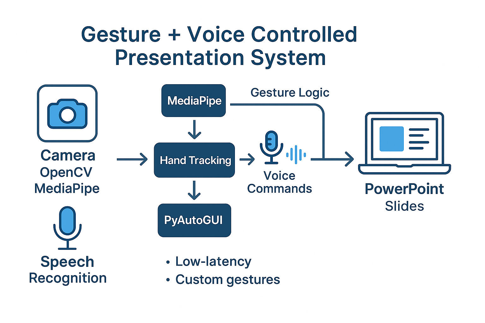
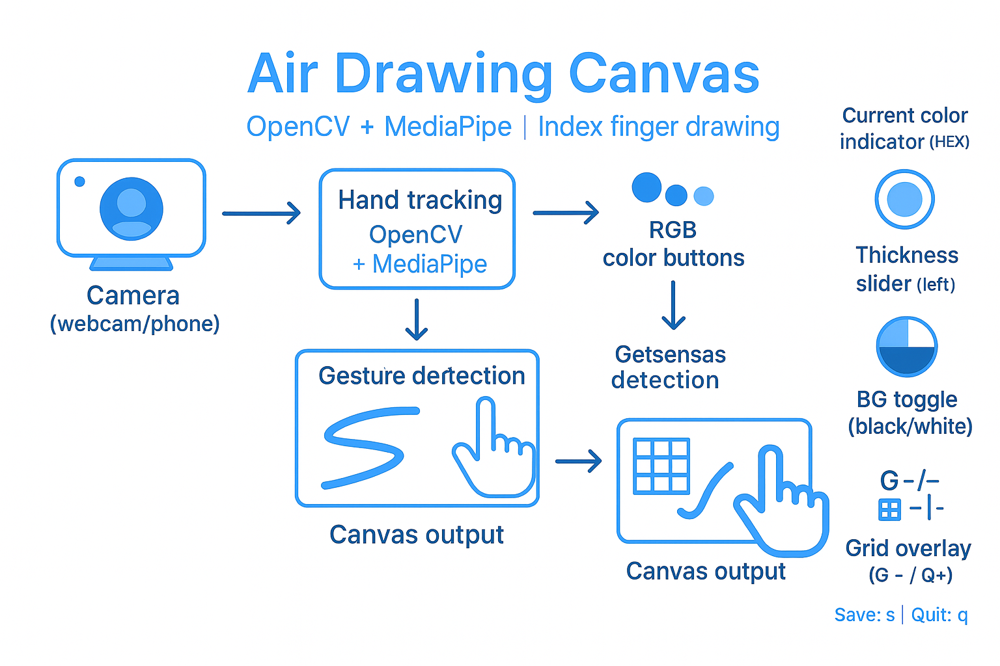
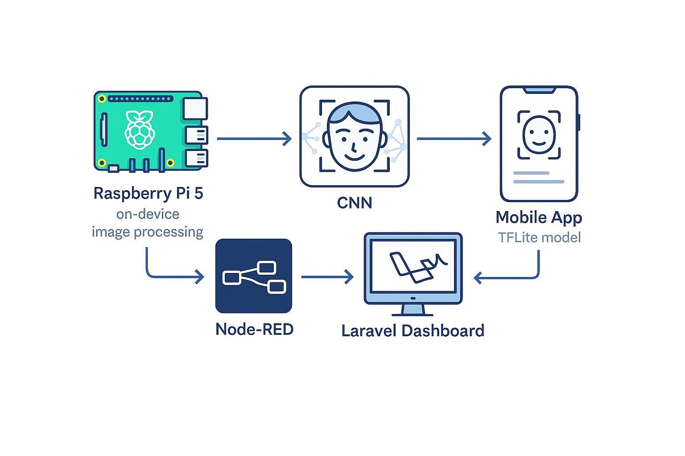

Featured Projects
A comprehensive mobile health solution that integrates wearable sensors with cloud analytics for real-time patient monitoring and predictive healthcare.

- Flutter mobile app with real-time vital sign visualization
- AWS backend with Lambda, SageMaker, and DynamoDB
- Edge-cloud switching algorithm for optimal processing
- ML prediction models for early health anomaly detection
- MQTT protocol for efficient IoT communication
An innovative presentation control system that combines hand gesture recognition with voice commands for seamless slide navigation.

- MediaPipe hand tracking for precise gesture recognition
- Python-based voice command processing
- Integration with PowerPoint and Keynote
- Customizable gesture mapping
- Low-latency performance for real-time control
Draw in the air with your index finger using a standard webcam. The app includes a left-side thickness slider, RGB color buttons, an eraser, a background toggle (black/white), a configurable grid, and one-key saving.

- Real-time index-finger tracking (MediaPipe Hands)
- Left-side thickness slider (hover with index to adjust)
- RGB color buttons (Red / Green / Blue) + Eraser mode
- Background toggle (black/white) without destroying strokes
- Grid overlay with adjustable spacing (G- / G+)
- Open-palm clear gesture + “Clear All” button
- Motion-based drawing guard (background subtraction)
- On-screen color indicator with current HEX
-
Quick save with
s(drawing + preview) and quit withq
A real-time facial emotion recognition system designed for smart museums. It uses a CNN model deployed on Raspberry Pi to detect visitor emotions, helping curators understand emotional engagement with exhibits.

- Real-time facial emotion detection using CNN
- Raspberry Pi 5 for on-device image processing
- Flutter app with integrated TFLite model for local inference
- Node-RED flow for emotion data transmission
- Laravel dashboard for emotion trends and reports
WSN: XBee 802.15.4 + BME (Waspmote)
Mini wireless sensing project using Libelium/Waspmote + XBee 802.15.4 and Cities PRO (BME/BME280). Sender/Receiver exchange ASCII payloads (TEMP/HUM/PRES), and the receiver computes medians/averages over batches of 10 packets.

- IEEE 802.15.4 link (PAN 0x1234, CH 0x0F), optional AES
- ASCII payload with tags:
TEMP/HUM/PRES - Medians & averages computed per 10 received frames
- Waspmote + Cities PRO (BME/BME280) on socket A